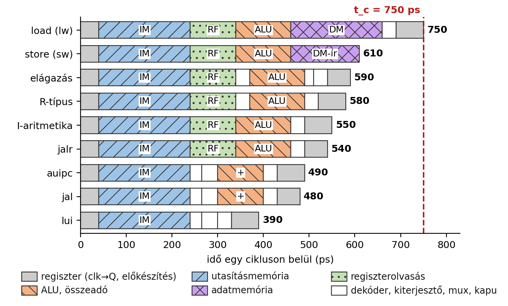

Az egyciklusú gép a 64 elemű sum kernelt 333
utasítással, pontosan 333 ciklusban hajtja végre: a CPI 1, jobb nem
lehetne. Mégis, ha megnézzük, mi történik egy-egy ciklus alatt, furcsa
kép rajzolódik ki. Egy addi a könyv példaértékeivel 550 ps
alatt végez, a gép azonban 750 ps-ot vár, mielőtt a következő utasításra
lépne. Az ALU mindössze 120 ps-ig dolgozik, az adatmemória az utasítások
ötödében, a többiben tétlen.
Miért nem lehet a rövid utasításoknak rövidebb ciklust adni? Mekkora a veszteség, és melyik elemet érdemes gyorsítani, ha csak egyet lehet? Ezekre a kérdésekre ez az alfejezet a kritikus út és a vasegyenlet segítségével ad számszerű választ.
Képzeld el, hogy egy iskolai kiránduláson minden megállónál addig vár a busz, amíg a leglassabb utas visszaér, és ezt a várakozási időt előre, egyszer rögzítik. Ha egyetlen utas biciklivel indul vissza a hegyről, minden megállónál annyit állunk, amennyit ő igényel.
Az egyciklusú gépben az órajel periódusa a „busz várakozási ideje”: a regiszterek csak az élen veszik át az új értéket, ezért a periódusnak elég hosszúnak kell lennie ahhoz, hogy bármelyik utasítás jele a PC-től a célregiszterig vagy a memóriáig érjen. Az ábra utasításosztályonként mutatja ezt az utat: minden sáv egy elem késleltetése, a sáv hossza a teljes idő, a piros függőleges vonal pedig a ciklusidő.

Figyeld meg, hogy a lui sávja alig fele a
lw-ének, és a lw az egyetlen, amely mindkét
memóriát és a regiszterírást is bejárja.
A számítás alapja az elemek késleltetése. Az alábbi értékek a könyv példaértékei: nagyságrendileg reálisak, de nem mérések, és nem egy konkrét gyártástechnológiáé.
| Elem | Jel (kód) | Késleltetés |
|---|---|---|
| regiszter: órajel → kimenet | pcq |
40 ps |
| regiszter-előkészítés (PC) | setup |
50 ps |
| utasításmemória, adatmemória olvasása | imem, dmem |
200, 200 ps |
| adatmemória írásának előkészítése | mem_setup |
150 ps |
| regiszterfájl olvasása / írás-előkészítése | rf_read, rf_setup |
100 / 60 ps |
| ALU / összeadó | alu, adder |
120 / 100 ps |
| dekóder / kiterjesztő / multiplexer / feltételkapu | dec, ext, mux,
gate |
25 / 35 / 30 / 20 ps |
| kombinációs szorzó (csak a bővítésben) | mul |
800 ps |
A táblázatból látszik, hogy a memória elérése a legdrágább elemi lépés, a vezérlés elemei pedig egy nagyságrenddel olcsóbbak.
Továbbvitt eredmény. A fenti elemkésleltetés-készlet
(dp.Delays) a könyv közös időzítési számpéldája; ezt
használja a Többciklusú adatút állapotgéppel,
A futószalag elve: átbocsátás és késleltetés és
a Pipeline-szimulátor és mélyebb
futószalagok.
Definíció. Egy utasítás kritikus útja a leghosszabb késleltetésű jelút az órajelél és az utasítás valamelyik célja (a PC, a regiszterfájl vagy az adatmemória) között. A gép minimális ciklusideje az összes támogatott utasítás kritikus útjának maximuma (Órajel, kritikus út és időzítési korlátok):
Szóban: a leghosszabb utasítás diktál, a többi vár.
Egy elem bemeneteit több út is táplálhatja; ilyenkor a később
érkező dönt. Az ALU második operandusa például a közvetlen
értékes utasításnál a kiterjesztőn és a multiplexeren át 330 ps-nál
érkezik, az első operandus a regiszterfájlból 340 ps-nál, tehát az ALU
340 ps-tól számol. Ugyanezért nem szerepel a dekóder (265 ps) a
lw útjában: gyorsabb, mint a regiszterolvasás.
| Osztály | Kritikus út (elemek) | Idő |
|---|---|---|
lw |
PC → IM → RF → ALU → DM → mux → RF-írás | 750 ps |
sw |
PC → IM → RF → ALU → DM-írás | 610 ps |
| elágazás | PC → IM → RF → mux → ALU → kapu → PC-mux → PC | 590 ps |
| R-típus | PC → IM → RF → mux → ALU → mux → RF-írás | 580 ps |
| I-aritmetika | PC → IM → RF → ALU → mux → RF-írás | 550 ps |
lui |
PC → IM → dekóder → kiterjesztő → mux → RF-írás | 390 ps |
A leghosszabb a lw, tehát
ps, az órajel pedig
GHz.
Mivel minden utasítás egy ciklus, a vasegyenlet (Végrehajtási idő, CPI és a vasegyenlet) ennyire egyszerű:
Szóban: az idő az utasításszám és a leglassabb utasítás idejének
szorzata. A sum kernelre
ns.
A veszteséget egy képzeletbeli, változó ciklusidejű
géppel mérjük, amely minden utasításnak pontosan a saját útidejét adja.
Ennek átlagos utasításideje a keverék gyakoriságaival súlyozva
.
A sum kernelre 600 ps, a branchy kernelre 603
ps. Az egyciklusú gép tehát körülbelül
-szor
lassabb az ideálisnál: minden ciklus átlagosan 150 ps-ot tétlenül tölt.
Ilyen gépet nem könnyű építeni, mert a következő órajelélt az
utasítástól függően kellene kiadni, még mielőtt tudnánk, mi az.
Súlyosabb a helyzet, ha egyetlen lassú művelet is kerül az
utasításkészletbe. Kombinációs szorzóval (800 ps) az R-típusú
mul útja 1260 ps, és mivel
a maximum, minden utasítás 1260 ps-ig tart: a gép
68%-kal lassabb lesz az olyan programokon is, amelyek soha nem
szoroznak. Egy kombinációs osztó még ennél is jóval hosszabb volna (ALU, shifter, szorzás és osztás).
Két kiút van, és a könyv mindkettőt végigjárja:
Amdahl törvénye (Amdahl és Gustafson törvénye) szerint a gyorsítás hatását a gyorsított rész aránya korlátozza. A ciklusidőben egy elem aránya = az elem késleltetése / , ha az elem a kritikus úton van. Ha -szeresére gyorsítjuk, és a kritikus út nem változik:
Az ALU 120 ps-a a lw útjának 16%-a, kétszeres gyorsítása
-szeres
gyorsulást ad. Az adatmemória 200 ps-a 26,7%, négyszeres gyorsítása a
képlet szerint 1,25-ot adna. A valóság 1,23: az 50 ps-os adatmemóriával
a lw útja 600 ps, ekkor viszont a 610 ps-os sw
válik a leghosszabbá. A kritikus út átvándorol, és a
további gyorsítás már nem hat. Ha egy elem nincs a kritikus úton
(például a célcím-összeadó), a gyorsítása semmit sem ér: a „gyorsítsd a
gyakori esetet” elv itt úgy módosul, hogy azt gyorsítsd, ami a
leghosszabb úton van.
Az elágazás gyakorisága, a loadok aránya vagy a program hossza az egyciklusú gép ciklusidejét egyáltalán nem befolyásolja: a hardver tulajdonsága, nem a programé. A keverék csak a pazarlás mértékét változtatja.
A lw útja lépésenként (ps):
| Lépés | Elem | Késleltetés | Érkezési idő |
|---|---|---|---|
| 1 | PC kimenete | 40 | 40 |
| 2 | utasításmemória | 200 | 240 |
| 3 | regiszterolvasás | 100 | 340 |
| 4 | ALU (cím) | 120 | 460 |
| 5 | adatmemória | 200 | 660 |
| 6 | eredmény-multiplexer | 30 | 690 |
| 7 | regiszterírás-előkészítés | 60 | 750 |
Az sw útja az ALU-ig azonos (460 ps),
utána a memóriaírás előkészítése következik:
ps.
A sum ciklusmagja öt utasítás:
lw (750 ps), add (580 ps), két
addi (550 ps), bnez (590 ps). Az egyciklusú
gépen egy kör
ps, az ideális gépen
ps lenne. A veszteség 730 ps körönként, 24%.
Az archkit.datapath az útidőt úgy számolja, hogy minden
elem kimenetének érkezési idejét a leglassabb bemenetéből vezeti le:
import sys; sys.path.insert(0, "code")
from archkit import datapath as dp, riscv
for cls in ["load", "store", "branch", "rtype", "itype", "lui"]:
path = dp.single_cycle_path(cls)
steps = " + ".join(f"{k}:{v}" for k, v in path)
print(f"{cls:6} {dp.single_cycle_time(cls)} ps = {steps}")
print("t_c =", dp.single_cycle_period(), "ps")load 750 ps = pcq:40 + imem:200 + rf_read:100 + alu:120 + dmem:200 + mux:30 + rf_setup:60
store 610 ps = pcq:40 + imem:200 + rf_read:100 + alu:120 + mem_setup:150
branch 590 ps = pcq:40 + imem:200 + rf_read:100 + mux:30 + alu:120 + gate:20 + mux:30 + setup:50
rtype 580 ps = pcq:40 + imem:200 + rf_read:100 + mux:30 + alu:120 + mux:30 + rf_setup:60
itype 550 ps = pcq:40 + imem:200 + rf_read:100 + alu:120 + mux:30 + rf_setup:60
lui 390 ps = pcq:40 + imem:200 + dec:25 + ext:35 + mux:30 + rf_setup:60
t_c = 750 psAz eredmény megegyezik a táblázattal. Most gyorsítsunk egy-egy elemet kétszeresére, és nézzük, mi lesz a ciklusidővel:
base = dp.single_cycle_period()
for key in ["imem", "dmem", "alu", "rf_setup", "rf_read", "mux", "adder", "mem_setup"]:
half = getattr(dp.Delays(), key) // 2
tc = dp.single_cycle_period(dp.Delays(**{key: half}))
print(f"{dp.ELEMENT_NAMES[key]:28} {half:3} ps -> t_c = {tc} ps, S = {base / tc:.3f}")
d = dp.Delays(dmem=50)
longest = max(dp.RV32I_CLASSES, key=lambda c: dp.single_cycle_time(c, d))
print("adatmemória 50 ps:", dp.single_cycle_period(d), "ps, leghosszabb:", longest)utasításmemória 100 ps -> t_c = 650 ps, S = 1.154
adatmemória 100 ps -> t_c = 650 ps, S = 1.154
ALU 60 ps -> t_c = 690 ps, S = 1.087
regiszterírás-előkészítés 30 ps -> t_c = 720 ps, S = 1.042
regiszterolvasás 50 ps -> t_c = 740 ps, S = 1.014
multiplexer 15 ps -> t_c = 735 ps, S = 1.020
összeadó 50 ps -> t_c = 750 ps, S = 1.000
memóriaírás-előkészítés 75 ps -> t_c = 750 ps, S = 1.000
adatmemória 50 ps: 610 ps, leghosszabb: storeA két memória gyorsítása éri meg a legtöbbet; az összeadó és a
memóriaírás-előkészítés gyorsítása hatástalan, mert egyik sincs a
lw útján. Figyelemre méltó a regiszterolvasás: felezése
csak 10 ps-t hoz, mert utána már a közvetlen érték útja (dekóder,
kiterjesztő, multiplexer) a hosszabb az ALU bemenetéig. Itt a kritikus
út egyetlen utasításon belül vándorolt át. Végül a három kernel
összevetése (a szorzóval is):
kernels = {"sum": riscv.sum_src(list(range(1, 65))),
"branchy": riscv.branchy_src(riscv.branchy_data(256)),
"saxpy": riscv.saxpy_src(3, list(range(64)), list(range(64)))}
for name, src in kernels.items():
counts = dp.class_counts(riscv.run(src).trace)
r = dp.compare_times(counts)
print(f"{name:8} N={r['n']:5} t_c={r['t_single']:4} ps T={r['T_single'] / 1000:7.2f} ns"
f" ideális: {r['T_ideal'] / 1000:7.2f} ns arány {r['T_single'] / r['T_ideal']:.3f}")sum N= 333 t_c= 750 ps T= 249.75 ns ideális: 199.88 ns arány 1.249
branchy N= 1420 t_c= 750 ps T=1065.00 ns ideális: 855.91 ns arány 1.244
saxpy N= 587 t_c=1260 ps T= 739.62 ns ideális: 401.81 ns arány 1.841A saxpy a mul miatt 1260 ps-os ciklussal
fut, és 84%-kal lassabb az ideálisnál, pedig csak minden kilencedik
utasítása szorzás.
Az ábra a következő alfejezet többciklusú gépét is mutatja. Az interaktív lapon az elemkésleltetés-csúszkákkal és az „Utasításkeverék” listával dolgozhatsz.
load-ról a store-ra ugrik, a ciklusidő 610
ps.lw hibás értéket ír vissza.
Ok: az órajelél a lw jelének megérkezése előtt
jön. Javítás:
a maximum, nem az átlag.lw a leghosszabb utasítás az egyciklusú
gépben?lw, sw, R-típus és
elágazás útidejét, az új
-t
és a frekvenciát.saxpy kernelen, mint az
egyciklusú? Határozd meg programmal 10 ps-os pontossággal, a többciklusú
ciklusszámok a dp.compare_times modelljéből
származzanak.Az egyciklusú gép ciklusideje a leghosszabb utasítás kritikus útja:
.
A könyv példakésleltetéseivel ez a load (PC, utasításmemória,
regiszterolvasás, ALU, adatmemória, multiplexer, regiszterírás), 750 ps,
azaz 1,33 GHz. A CPI 1, így
,
de a rövidebb utasítások ideje elvész: a sum kernelen az
ideális változó ciklusidejű gép 1,25-szor gyorsabb volna. Egy lassú
művelet, például a szorzó, minden utasítást lelassít. Gyorsítani csak a
kritikus út elemét érdemes, és az Amdahl-számítás addig érvényes, amíg
az út nem vándorol át. A kiutak: több rövid ciklus vagy futószalag. A
40–800 ps-os elemkésleltetések a könyv közös időzítési példája.
Mind a négy útban benne van az ALU, ezért mindegyik 80 ps-mal nő:
lw 830, sw 690, R-típus 660, elágazás 670 ps.
ps,
GHz.
s, GHz.
Az ALU 40 ps lesz: lw 670, sw 530, R-típus
500, elágazás 510 ps. A leghosszabb továbbra is a lw, ezért
.
Amdahl:
,
,
.
Egyezik, mert a kritikus út nem változott.
100 ps-os olvasással a lw útja 650 ps, ez még hosszabb a
sw 610 ps-ánál:
ps,
.
0 ps-nál a lw 550 ps lenne, de a sw 610 ps-a
marad, tehát
ps,
,
nem 1,36. Az olvasás további gyorsítása 110 ps alatt (a
ps-os tartalék elfogyása után) semmit sem hoz.
for key in ["pcq", "imem", "rf_read", "alu", "dmem", "mux", "rf_setup", "setup", "dec", "ext"]:
d = dp.Delays(**{key: 0})
cls = max(dp.RV32I_CLASSES, key=lambda c: dp.single_cycle_time(c, d))
print(f"{key:8} = 0 ps -> t_c = {dp.single_cycle_period(d):3} ps, leghosszabb: {cls}")pcq = 0 ps -> t_c = 710 ps, leghosszabb: load
imem = 0 ps -> t_c = 550 ps, leghosszabb: load
rf_read = 0 ps -> t_c = 740 ps, leghosszabb: load
alu = 0 ps -> t_c = 630 ps, leghosszabb: load
dmem = 0 ps -> t_c = 610 ps, leghosszabb: store
mux = 0 ps -> t_c = 720 ps, leghosszabb: load
rf_setup = 0 ps -> t_c = 690 ps, leghosszabb: load
setup = 0 ps -> t_c = 750 ps, leghosszabb: load
dec = 0 ps -> t_c = 750 ps, leghosszabb: load
ext = 0 ps -> t_c = 750 ps, leghosszabb: loadA dekóder, a kiterjesztő és a PC-előkészítés eltávolítása semmit sem
ér, mert nincsenek a lw leghosszabb útján. A
regiszterolvasásé is csak 10 ps-t hoz. Az adatmemória-olvasás nélkül a
sw lesz a leghosszabb.
counts = dp.class_counts(riscv.run(kernels["saxpy"]).trace)
for mul in range(800, 2000, 10):
r = dp.compare_times(counts, dp.Delays(mul=mul))
if r["T_multi"] < r["T_single"]:
k = dp.mul_cycles_for(dp.Delays(mul=mul))
print(f"mul = {mul} ps: egyciklusú t_c = {r['t_single']} ps, "
f"többciklusú CPI = {r['cpi_multi']:.3f}, szorzás {k} ciklus")
breakmul = 1210 ps: egyciklusú t_c = 1670 ps, többciklusú CPI = 4.433, szorzás 4 ciklusA kiegyenlítődés 1200–1210 ps körül van: fölötte az egyciklusú gép minden utasítását terhelő hosszú ciklus drágább, mint a többciklusú gép többletciklusai. A pontos határ a keveréktől függ.